不新开项目 —— 把你现在这个能跑的 MVP，改造成一座把 Android 全栈知识点全部串起来的完整产品。
一句话定位：当前项目是一个「能跑通主流程的 MVP」。它已经证明了你会用 Activity / Fragment / RecyclerView / SQLite / 资源多语言这些概念型 API；但它离「成熟独立开发者」缺的不是某个 API，而是整整两层——架构层（状态怎么管、依赖怎么给、数据从哪来）和工程层（怎么测、怎么发布、怎么合规）。
inner join、CONFLICT_IGNOREattachBaseContextfitsSystemWindows 处理| 位置 | 现状 | 暴露的知识缺口 |
|---|---|---|
| MyDbHelper.onUpgrade | 三张表全 drop 重建，用户数据全丢 | Room Migration / ALTER TABLE |
| DbManager.checklogin | 密码明文入库、明文比较 | 加盐哈希、安全存储 |
| DbManager 选课 | insert + updateCount 两步、无事务 | 数据库事务与一致性 |
| MainActivity.lang / currentuserid | static 变量，重启回中文、要重登 | DataStore 持久化状态 |
| 全部 DB 调用 | 跑在 UI 回调里（主线程） | 协程 / 线程池 / 异步 |
| 各 Fragment | 每次跳转重新查库、无缓存 | ViewModel + Repository |
| 各 Fragment | 到处 new DbManager(getContext()) | 依赖注入 Hilt |
| 导航 | 手写 FragmentTransaction 切换 | Navigation Component |
| 列表刷新 | notifyDataSetChanged() 全量刷新 | ListAdapter + DiffUtil |
| 选课大厅 | 一次性加载全部，无分页 | Paging 3 |
| 列表布局 | RecyclerView 套在 ScrollView 内，复用失效、滑动冲突 | 正确的嵌套滚动 |
| 项目根目录 | 没有 .git | Git（最便宜也最该先补） |
| app/build.gradle | 无混淆 / 无签名 / 无变体 / 无 ViewBinding | R8、签名、多渠道 |
| 全局 | 无 Loading/Empty/Error 三态、无异常兜底 | 健壮性设计 |
这张表是整份蓝图的核心：左边是你要补的知识，右边是它在 v2.0 里落到哪个功能。做完功能，知识就补上了。
| 知识点 | 落地功能 | 验收标准 |
|---|---|---|
| ViewModel + StateFlow/LiveData | 选课大厅、课表、成绩三个页面各自 ViewModel | 旋转屏幕 / 切后台回来，列表与筛选状态不丢 |
| Repository 单一数据源 | CourseRepository 统一供数，页面不直接碰 DAO | 页面里搜不到任何 DbManager / Cursor |
| MVVM 分层 | UI(Activity/Fragment) → ViewModel → Repository → Room | 每层只依赖下一层，无反向引用 |
| Hilt 依赖注入 | AppModule 提供 Database / DAO / Repository / Api | 全项目无手写 new Repository() |
| Navigation Component | 登录 → 主页 → 详情 → 编辑资料 全部走 nav_graph | 用 Safe Args 传 courseId，类型安全 |
| Fragment Result API | 详情页退选后，回传刷新列表与筛选计数 | 退选后返回列表，容量与"已选"角标同步变化 |
| 单向数据流 UDF | ViewModel 暴露不可变 UiState，页面只渲染 | UI 层没有业务判断分支 |
| 三态 UI | 统一 Loading / Empty / Error 组件（见效果图 14） | 任何页面都不出现白屏无反馈 |
| 知识点 | 落地功能 | 验收标准 |
|---|---|---|
| Room（Entity/DAO/Database） | 用 Room 重写 table_user / table_course / table_selection | 编译期校验 SQL，无手写 Cursor 遍历 |
| Room Migration | 给"新增 banji 列"补一个迁移，而不是 drop 重建 | 升级 DB 版本后老数据仍在 |
| @Transaction | 选课 = 插记录 + 加人数，包在一个事务里 | 中途失败时两边都回滚 |
| DataStore（Preferences） | 登录态 Token、记住我、语言、主题、上次登录学号 | 杀进程重启，语言与登录态保持 |
| 密码加盐哈希 | 注册写库前 MessageDigest+salt，登录比对哈希 | DB 里看不到明文密码 |
| Paging 3 | 选课大厅分页加载（每页 10 条） | 滚动到底部自动加载下一页 |
| 离线优先 + 缓存 | 网络失败时回落到本地 Room 数据 | 断网仍能看到上次的课表与成绩 |
| 知识点 | 落地功能 | 验收标准 |
|---|---|---|
| Retrofit + OkHttp | 接一个 Mock 服务（登录 / 选课 / 成绩），本地也能跑 | 断网时错误态正确、有网时数据来自网络 |
| 拦截器 Interceptor | 统一加 Token、打请求日志、加缓存头 | Logcat 能看到请求/响应耗时 |
| 序列化（Gson/Moshi） | 接口 DTO ↔ 实体映射 | DTO 与 Entity 分离，不混用 |
| 协程 / ExecutorService | 所有 DB 与网络调用移出主线程 | 列表快速滚动不掉帧 |
| Flow + 操作符 | 搜索框输入防抖（debounce）后触发查询 | 连续输入只发一次请求 |
| 超时 / 重试 / 错误映射 | 统一 Result 包装，映射成用户看得懂的文案 | 错误提示能区分网络/服务器/校验 |
| 知识点 | 落地功能 | 验收标准 |
|---|---|---|
| 运行时权限 | 注册/编辑资料页换头像 → 申请相机、相册权限 | 拒绝后给解释、能跳设置页 |
| 通知 + NotificationChannel | 选课截止、成绩发布、余量告急推送（见效果图 09） | 点击通知能深链进详情页 |
| WorkManager | 每天定时查余量、每周查成绩，触发提醒 | 杀进程后任务仍按时执行 |
| 前台服务（进阶） | 抢课倒计时 / 余量监听 | 常驻通知可见、可停止 |
| BroadcastReceiver | 监听网络变化，自动刷新并提示"网络已恢复" | 开关飞行模式能看到联动 |
| Deep Link / App Links | 通知与外部链接直达课程详情 | adb shell am start -a VIEW -d ... 能打开 |
| 相机 / 相册 | 头像拍照与选图、裁剪 | 选完头像立即持久化 |
| WebView | 用户协议 / 隐私政策页（见效果图 13） | 加载本地 assets 页面，处理返回键 |
| 应用内语言切换（进阶） | 深化现有实现：语言持久化 + 重启保持 + 跟随系统 | AppCompatDelegate 或按语言重建，三语全覆盖 |
| 知识点 | 落地功能 | 验收标准 |
|---|---|---|
| Material 3 主题体系 | 建立 colors / type / dimens / shape 四件套（见效果图 00） | 没有硬编码色值，改一处全局生效 |
| 深浅色模式 | values-night + 设置页三选一（跟随/浅/深） | 切深色全页可读，无白底白字 |
| ViewBinding | 全项目替换 findViewById | 空指针在编译期就被拦住 |
| ListAdapter + DiffUtil | 三个列表页统一改造 | 刷新只重绘变化的条目，有动画 |
| 自定义 View | 周课表视图（见效果图 06）：自绘网格与课程块 | 支持点击、冲突高亮、横竖屏 |
| 动画与转场 | 列表→详情共享元素、底部导航切换过渡 | 跳转有连贯感，不闪白 |
| 下拉刷新 + 骨架屏 | 首页与成绩页 | 首屏先出骨架，不出现长时间空白 |
| 无障碍与大字体 | contentDescription、sp 单位、TalkBack 走查 | 系统字体放大后不截断 |
| 知识点 | 落地功能 | 验收标准 |
|---|---|---|
| Git + 分支规范 | 初始化仓库，main / dev / feature-*，写好 .gitignore | 每个功能一个 PR，历史清晰 |
| Gradle 变体 | buildTypes（debug/release）+ productFlavors（dev/staging/prod） | 一套代码打出三种环境包 |
| 签名 + keystore | 生成正式 keystore，配置 signingConfig | release 包能装到真机 |
| R8 混淆 + 资源压缩 | 开启 minifyEnabled / shrinkResources，写 keep 规则 | 混淆后功能正常、包体积下降 |
| 单元测试 | Repository 选课事务、ViewModel 状态流转（JUnit + Mockito） | 覆盖核心分支，CI 上会自动跑 |
| 仪器测试 | Espresso：登录 → 选课 → 课表 主流程 | 一条命令跑通核心链路 |
| Lint | 接入 lint 并清空 error 级问题 | 构建不再有硬编码/可访问性告警 |
| CI（GitHub Actions） | push 自动 build + test + lint | README 上有绿色构建徽章 |
| 崩溃与内存 | Crashlytics 上报 + LeakCanary 检测 | 能查到一次真实崩溃的堆栈与设备信息 |
| 启动与体积优化 | SplashScreen API、Baseline Profile、APK 分析 | 冷启动与包体积有前后对比数据 |
| 知识点 | 落地功能 | 验收标准 |
|---|---|---|
| 隐私政策 + 用户协议 | 启动页勾选同意、设置页可查阅（效果图 01 / 13） | 不同意则不可收集任何数据 |
| 权限最小化 | 只申请相机/相册/通知，且都在使用场景中弹 | 无"一启动就要一堆权限" |
| APP 备案 | 完成工信部 APP 备案，展示备案号 | 国产应用商店要求的前置条件 |
| AAB / 多渠道上架 | 打 AAB 或分渠道 APK，投华为/小米/OPPO/vivo/应用宝 | 至少在一个商店审核通过上线 |
| 版本管理 | versionCode / versionName 规范 + 更新日志 | 能说清每个版本改了什么 |
下面 15 个页面构成 v2.0 的完整功能面。加粗的是新增或大改的部分。
| 页面 | 核心功能 | 主要知识点 |
|---|---|---|
| 00 设计规范 | 色板 / 字阶 / 组件库（按钮、Chip、输入框、进度条、标签） | Material 3 主题体系、设计令牌 |
| 01 启动页 新增 | SplashScreen API、品牌展示、隐私政策勾选、初始化数据与登录态校验 | 启动优化、SplashScreen、合规、DataStore 读取 |
| 02 登录页 | 学号/密码登录、记住我、忘记密码、手机验证码 / 统一身份认证、语言切换 | 表单校验、DataStore、OkHttp 登录接口、错误态 |
| 03 注册页 | 完整表单 + 实时校验、头像上传、手机验证码、学院/班级选择 | 运行时权限、相机相册、密码哈希、ViewModel 校验 |
| 04 选课大厅 | 搜索(课程/教师/教室) + 防抖、7 类筛选、下拉刷新 + 分页、容量进度、选课 | Paging 3、Flow debounce、DiffUtil、三态 UI |
| 05 课程详情 | 课程信息 / 上课安排 / 简介、冲突检测提示、加入或退选、分享收藏 | Navigation Safe Args、事务、共享元素动画 |
| 06 我的课表 | 周课表网格视图 + 列表视图切换、总学分/学时统计、冲突高亮 | 自定义 View、自绘网格、数据聚合 |
| 07 成绩查询 从 0 实现 | GPA 卡片、学期筛选、成绩列表、趋势图表、排名 | RecyclerView 多类型、图表绘制、ViewModel |
| 08 学习计划 新增 | 待办清单 + 打卡、完成进度环、定时提醒、新建任务 | WorkManager、通知、Room、自定义进度环 |
| 09 消息中心 新增 | 通知列表分类、未读红点、通知权限引导、点击深链跳转 | Notification、Deep Link、未读状态持久化 |
| 10 个人中心 | 资料卡 + 数据概览、功能入口聚合、退出登录 | 多入口导航、DataStore 清理 |
| 11 编辑资料 新增 | 头像更换（拍照/相册/移除）、多字段编辑与校验、保存 | 权限、图片处理、表单校验、Repository 更新 |
| 12 设置 新增 | 深色模式三选一、语言切换、通知开关、清缓存、检查更新、关于 | values-night、DataStore、缓存管理、应用内更新 |
| 13 关于与隐私政策 新增 | 版本信息、协议与隐私政策入口、开源许可、备案号 | WebView、合规文案、版本读取 |
| 14 全局状态规范 | Loading 骨架屏 / Empty 空态 / Error 重试 / 未登录 四态统一样式 | 健壮性设计、统一 UiState 封装 |
com.example.myapplication003 ├─ data/ ← 数据层 │ ├─ local/ Room：AppDatabase、Dao、Entity、Migration │ ├─ remote/ Retrofit：ApiService、DTO、Interceptor │ ├─ prefs/ DataStore：UserPrefs（语言/主题/登录态） │ └─ repository/ CourseRepository、UserRepository（唯一供数口） ├─ di/ Hilt：AppModule、DatabaseModule、NetworkModule ├─ ui/ │ ├─ splash/ login/ register/ │ ├─ hall/ CourseHallFragment + CourseHallViewModel │ ├─ detail/ course/ ← 详情 │ ├─ schedule/ mycourse/ ← 周课表（含自定义 View） │ ├─ score/ plan/ message/ profile/ setting/ about/ │ └─ common/ UiState、三态组件、通用 Adapter ├─ work/ WorkManager Worker（余量/成绩提醒） ├─ receiver/ 网络变化广播 └─ widget/ 自定义 View（TimetableView 等）
每阶段都以「可运行、可演示」为终点。不要跳阶段——架构没打好就做网络，后面会返工。
完整尺寸 PNG 位于项目根目录 升级效果图/，每张 390×844@2x（780×1688）。下面按流程顺序排布。
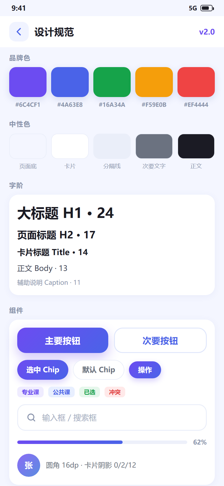
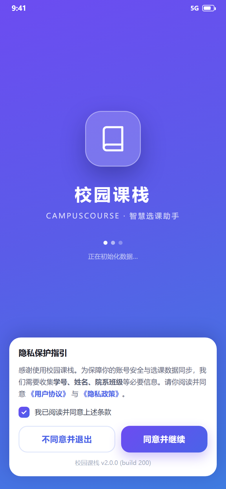
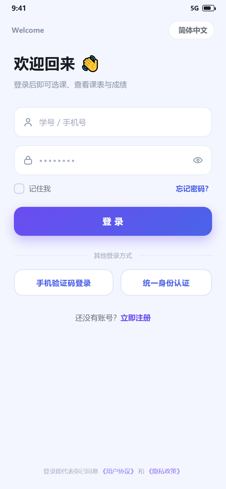
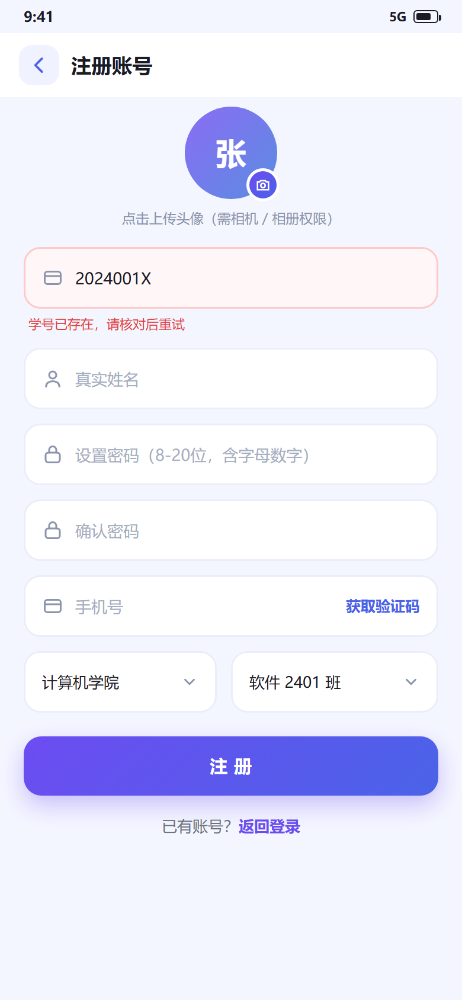
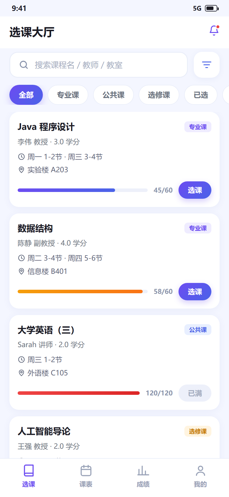
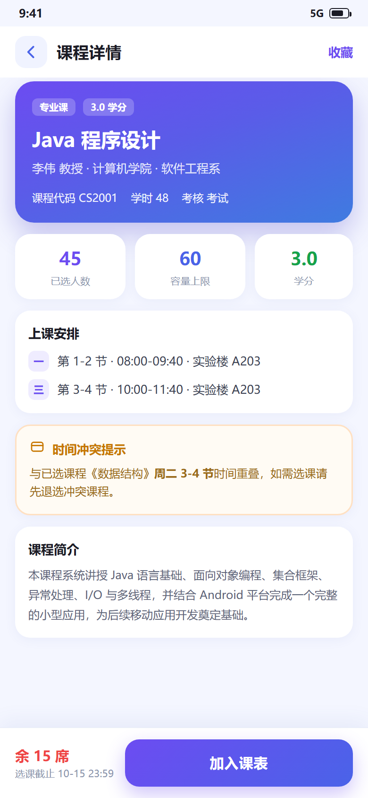
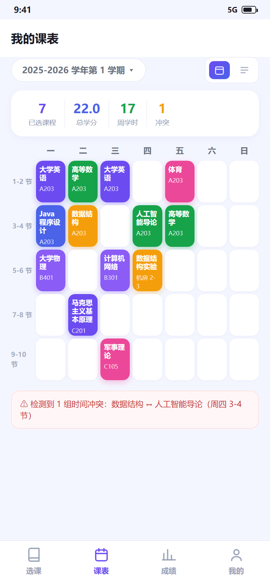
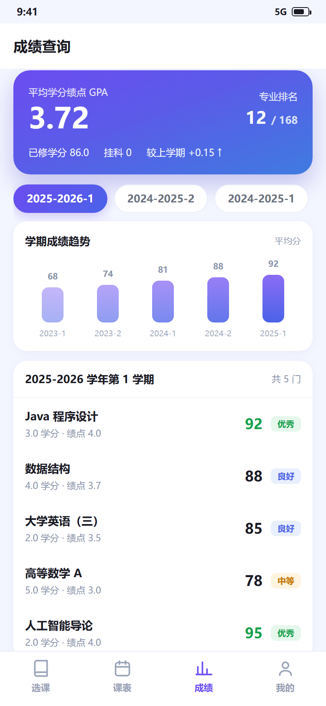
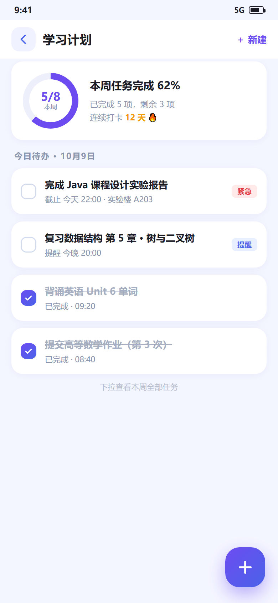
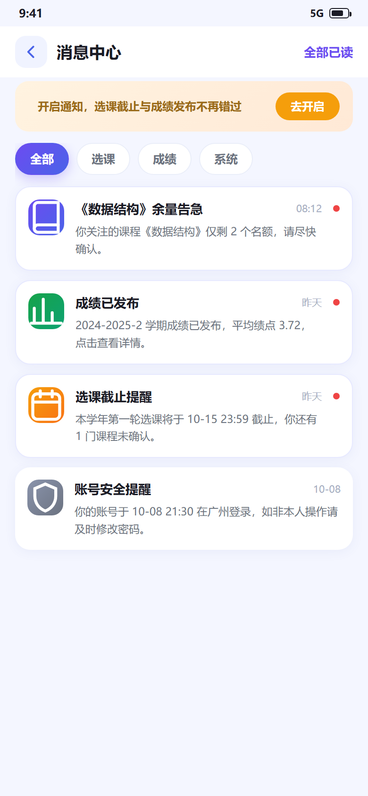
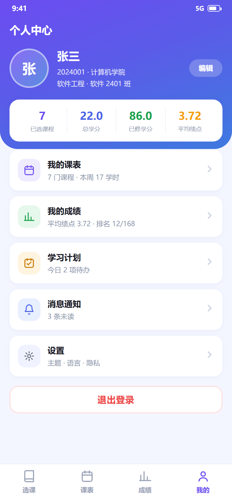
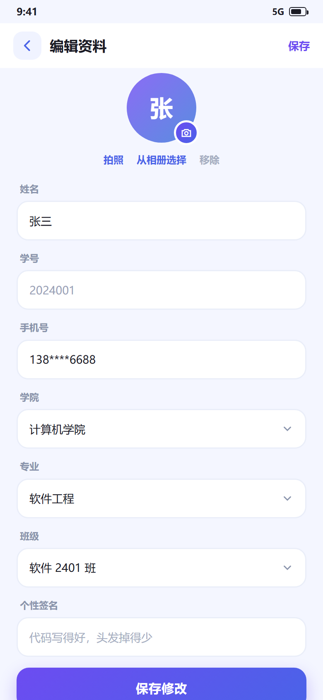
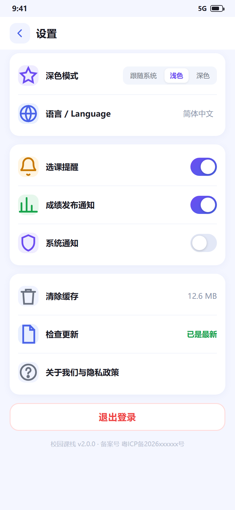
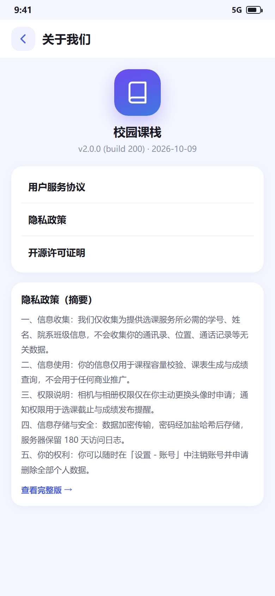
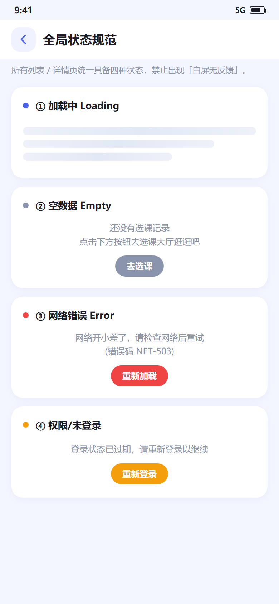
v0.1-arch、v0.2-network…），简历上就是一条可验证的时间线。